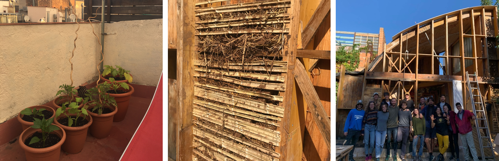

term 1
other projects

connecthort
Each Saturday morning some class mates and me are going to “Connecthort” in Barcelona to do volunteering. We are helping in different kind of fields: cleaning soil, removing stones from clay, building walls from bio-materials, cutting bamboo strips, mixing natural insulation and pressing bricks from clay.
planting vegetables
Also I start planting my own vegetables on my terrace and realise they grow much faster than in Germany. I bought seeds for tomatoes, cucumber, pepper, chili, melon, zucchini and pumpkin. In the next step I would like to make my own compost to reuse my food waste while preparing a biological fertilizer out of it.
plant disease analysis
text
compost
For me its important to separate your trash. I think it’s an easy way to help reusing materials and recycle products. That’s why also here in Barcelona I am separating my trash, paper, plastic and general trash. But here is no possibility to reuse the bio-trash, which comes from cooking food or leaver etc. That’s why I decided to make my own compost on my terrace. So I bought a big bucket, organic soil, a plate for under the bucket and around 100 worms. I collected some leaves from the forest and carton-paper from school. I made some holes inside the bucket so in the end the compost-water/natural-fertiliser can come out. Then I start creating the layers. The first layers I wheat paper, which I put around 10 min into a bowl full of water. The next layer were the leaves, they are also for the worms to be able to hide underneath. The next, soil layer is the basic for the compost and above it I already separated the worms with their soil content. Then I waited a day until the worms were more relaxed and settle in their new home. So from now on everyday a put a bid of different kind of food trash to feed them, like carrots, potatoes, coffee-rest, zucchini and so on. Its important not to put any cooked food and no oranges/citrons.